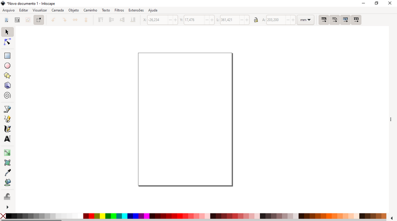

O primeiro software que utilizaremos em nosso curso é o Inkscape, que é um software livre, gratuito e profissional, para desenho vetorial com praticamente todos os recursos dos softwares comerciais.
Curiosidade: A capa e a maioria das artes apresentadas nesta apostila foram criadas com o Inkscape.
Ao abrir o Inkscape pela primeira vez você encontrará uma tela inicial parecida com esta:
É possível configurar todos os controles que aparecem de acordo com sua necessidade, mas antes, analisaremos os elementos principais da área de trabalho.
No centro da tela temos o Canvas, que é a área de desenho onde se encontra a página, é possível desenhar fora da página.
Abaixo do canvas temos a Paleta de Cores onde alteramos as cores dos objetos conforme os desenhamos.
Acima do canvas temos a Barra de Propriedades, ou de Controle de Ferramenta, onde podemos alterar as opções das ferramentas que utilizamos e as propriedades dos objetos.
Ao lado esquerdo do canvas temos a Barra de Ferramentas com as ferramentas de criação e edição de objetos.
Estas são as quatro principais funções em todos os aplicativos de design gráfico e são elas que usaremos para aprender os fundamentos do design. Você verá que os mesmos fundamentos serão aplicados com estas mesmas funções em qualquer software que utilizar, alterando apenas a nomenclatura das barras e ferramentas, as teclas de atalho e a localização de menus.
Antes de começarmos, veremos algumas configurações que podemos efetuar no Inkscape para você se acostumar com elas. Quase sempre antes de iniciarmos um desenho precisaremos ter algumas propriedades já definidas para a exibição da tela e da página. São essas propriedades que veremos agora:
Página:
Para configurarmos a página você deve abrir a janela de encaixe Propriedades do Desenho que se encontra no menu Arquivo.
Com a janela de encaixe aberta, altere as seguintes propriedades:
Terminado, você pode fechar a janela de encaixe, caso necessite no futuro de alterar alguma coisa nela, já se lembra onde se encontra.
Algumas janelas de encaixe são necessárias, outras não, pode ser até que ao abrir seu Inkscape pela primeira vez uma janela de encaixe estivesse aberta. Algumas utilizaremos com frequência, como:
Você pode deixá-las abertas e as recolher clicando nos três pontinhos na lateral ou abri-las apenas quando necessário.
Algumas barras de ferramentas são fundamentais e devem estar sempre na tela como a Barra de Propriedades e a Barra de Ferramentas, outras utilizaremos algumas vezes apenas, e outras não precisamos pois podemos acessar sua função pelos menus quando necessitarmos. Para exibir e ocultar barras de ferramentas, você pode ir até o menu Visualizar → Exibir/Ocultar. Certifique-se de que estejam marcadas estas três opções:
O restante pode ser ocultado, inclusive as réguas, que utilizaremos apenas para inserir guias e as ativaremos com o atalho Ctrl+R.
Em diversas ocasiões precisaremos de uma maior visualização do desenho, nesse caso podemos ativar o modo de Tela Cheia que está presente em vários softwares. No Inkscape, para trabalharmos em tela cheia usamos o atalho Ctrl+F11.
Mas nem sempre poderemos trabalhar em tela cheia, e por isso quanto menos elementos tivermos na tela, melhor será nossa visualização, por outro lado, é preciso aprender os atalhos dos elementos que ocultamos. Designers com algum tempo de experiência costumam saber de cor os atalhos de diversos softwares diferentes.
Segue abaixo uma lista com os atalhos mais úteis do Inkscape, retorne aqui sempre que precisar. Se quiser, guarde o link para a lista completa:
Arquivo e Edição:
Operações Booleanas:
Grupo:
Arranjar:
Alinhar:
Visualização:
Ferramentas: